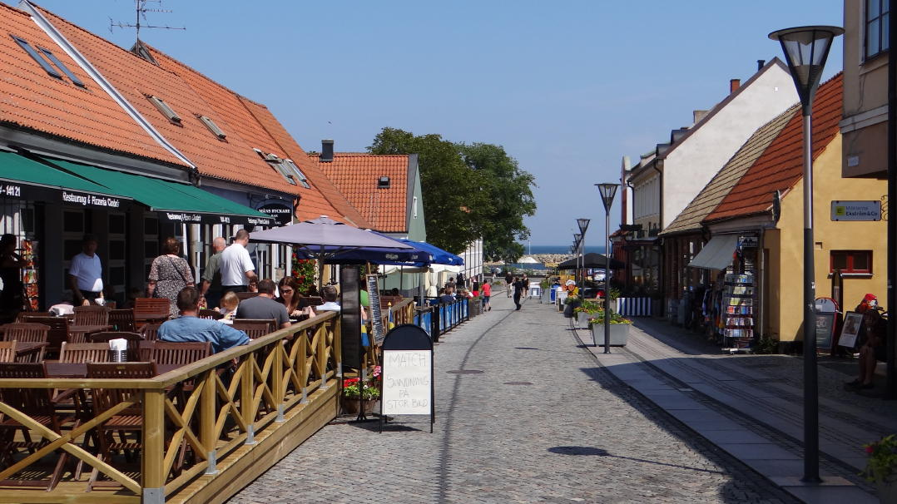
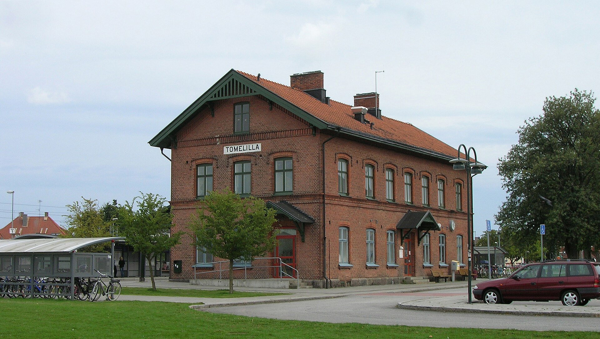

Quiz: Små kommuner, stora skillnader
Ekonomistyrning i Simrishamn och Tomelilla
Sida 1 av 5
Ekonomistyrning i Simrishamn och Tomelilla


Små kommuner, stora skillnader - Testa dina kunskaper!
Filstruktur: Detta quiz är byggt med separation av concerns-principen, där HTML, CSS och JavaScript är uppdelade i separata filer:
Att dela upp kod i separata filer ger flera fördelar:
Skapad: 2025-11-14 med AI-assistans (Claude 4.5 Sonnet)
Baserad på: Analysrapporter från Kolada och blogg om kommunal ekonomistyrning
Uppdatering 2025-11-14: Skapad ny quiz om ekonomistyrning i Simrishamn och Tomelilla med fokus på kultur, fritid och omsorg. Programmet använder separata filer för HTML, CSS och JavaScript för bättre underhållbarhet och struktur.
Quiz: Små kommuner, stora skillnader - Ekonomistyrning i Simrishamn och Tomelilla
Frågor och fördjupade förklaringar baserade på (i Harvard-format):
Det är nu supersmidigt att få fram en intelligent analysrapport för vilken svensk kommun som helst via Kolada. Dessa AI-genererade rapporter analyserar automatiskt din kommuns nyckeltal och jämför med andra kommuner.
📊 Prova själv: Besök Koladas rapportsida "Läget i X" och välj din kommun!
Kolada är en öppen databas för kommunal analys och jämförelser. Verktyget använder AI för att automatiskt generera intelligenta analysrapporter för alla Sveriges 290 kommuner.
Alla "Läget i X"-rapporter finns på: www.kolada.se/rapporter/laget/